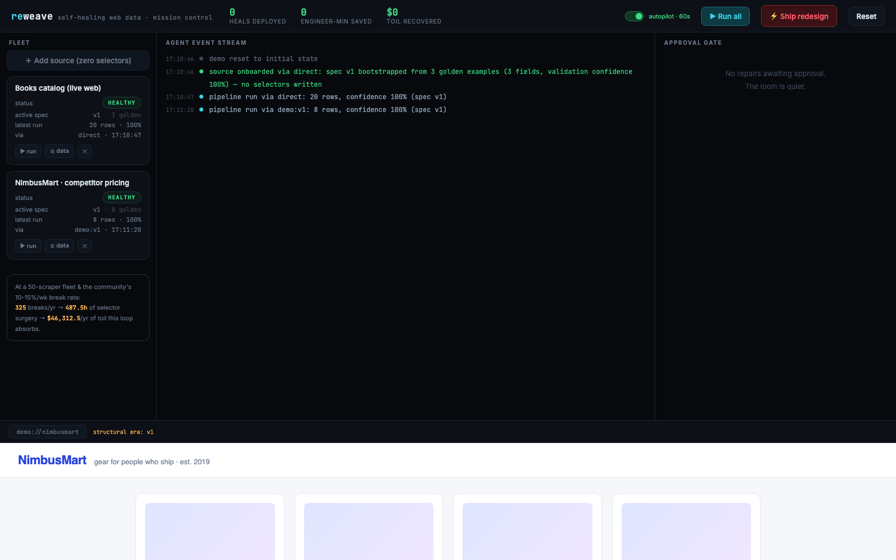
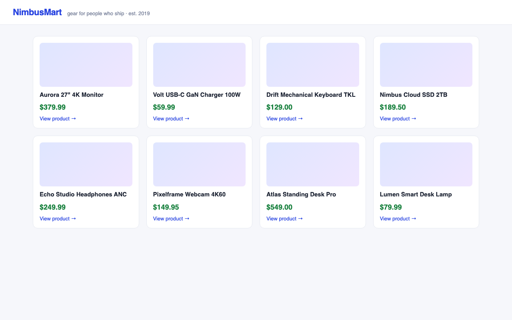
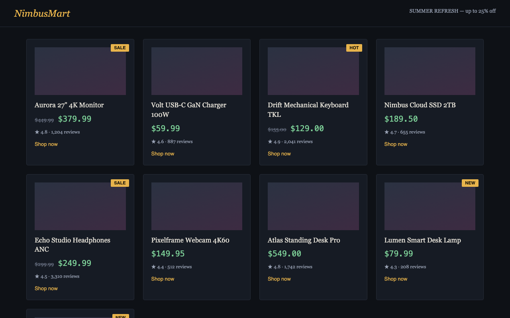
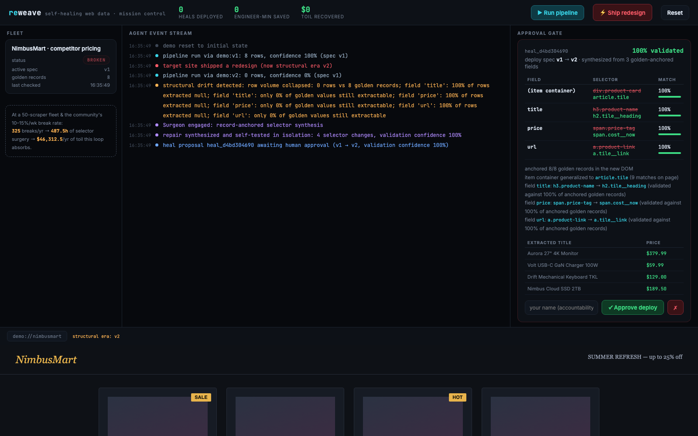
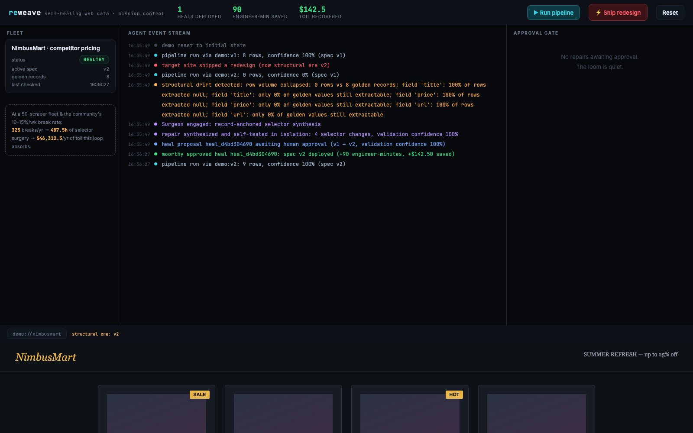

Break the site.
Watch the agent stitch it back.
Reweave is a self-healing layer for web data pipelines — and you never write a selector. Paste a URL and a few golden examples and the Surgeon synthesizes the extraction spec; when a redesign breaks it, the Sentinel detects the drift, the Surgeon repairs it, and the Gate holds every fix until a named human approves — before a single bad row ships.
Selector surgery is a tax every data team quietly pays.
Scrapers don't crash when a site redesigns — they go quiet, or worse, ship wrong data. Someone notices days later, then spends an afternoon in devtools rebuilding selectors by hand.
Three roles. One healing loop.
Detection, synthesis, and approval are deliberately separated — the agent that finds the break is not the agent that ships the fix, and no fix ships without a human.
Sentinel
Validates every run against golden records — facts the pipeline has already proven true. It catches silent failures, not just crashes.
- Golden-record validation on every pipeline run
- Per-field drift reports: row volume, extractability, confidence
- Flags 0 rows vs 8 known-true records instead of shrugging at an empty page
Surgeon
Record-anchored selector synthesis: it re-locates known-true facts in the redesigned DOM and works backward to the selectors that find them.
- Re-anchors golden values ("$379.99", "Aurora 27" 4K Monitor") in the new DOM
- Generalizes the shared structural signature across all matches
- Validates every candidate against all golden records before proposing
- Bootstraps new sources the same way — onboarding is a heal from zero
Gate
Nothing deploys itself. The repair waits with full before/after diffs and re-extracted data until a named human signs off.
- Side-by-side selector diffs + live re-extraction preview
- Named approver required — accountability is part of the protocol
- 30-second review, permanently recorded in the audit ledger
The healing loop
Bright Data Web Unlocker handles hostile targets — anti-bot walls, geo-blocks, rendering — so the healing loop sees the same DOM a real user sees.
Reweave is an MCP server — nine tools, from add_source to gated deploys. The TrueForge agent harness drives onboarding, detection, and repair, with harness-level approval gates layered on top of Reweave's own Gate.
From zero to healing. You never write a selector.
Onboarding is the same record-anchored machinery as healing, pointed at day one. Paste a URL and two or more golden examples — records you can see on the page — and the Surgeon synthesizes and validates the extraction spec itself.
Anchors in text — or in attributes
Real catalogs truncate what you can see: the page shows “A Light in the …” while the full
value lives in a title= or alt= attribute. Synthesis anchors your examples
in node text or attributes, groups candidates by (tag, attribute) shape, and picks the
most specific container selector that covers every anchored card — so a few examples generalize
to the whole page.

1 2 3 4The zero-selector front door. ＋ Add source takes a URL and 2+ golden examples — the same call as reweave add, POST /api/sources, or the add_source MCP tool.
The Surgeon bootstraps the spec. "spec v1 bootstrapped from 3 golden examples (3 fields, validation confidence 100%) — no selectors written."
A real site, live. books.toscrape.com healthy on its synthesized spec — 20 rows at 100% confidence, every run's rows stored and browsable in the data drawer.
Autopilot, always on. Every source re-checked on a 60-second cadence. Detection and synthesis never sleep — deploys still wait at the Gate.
Every run's rows are stored — the last 20 runs per source — browsable in the dashboard's data drawer and exportable as CSV or JSON: /api/sources/{id}/rows?fmt=csv, reweave export, or the get_rows MCP tool.
Continuous background monitoring of every source — 60 s default, one dashboard toggle. Detection and repair synthesis run around the clock; deploys still wait for a named human at the gate.
One click ships a hostile redesign. The agent does the rest.
The demo runs a real pipeline against demo://nimbusmart, a product site with a "ship redesign" button that renames every class and restructures the DOM — the exact failure that kills scrapers in the wild.
Same products. Entirely new DOM.
Era v1 → era v2: light theme to dark, serif rebrand, and — the part that matters — every selector's
anchor is gone. div.product-card → article.tile.
The old spec extracts 0 rows and raises no exception. That's a silent failure.

div.product-card › h3.product-name › span.price-tag
8 rows · confidence 100%

div.product-card → article.tile · h3.product-name → h2.tile__heading
0 rows · confidence 0% · no exception raised
Drift caught, repair synthesized, held at the gate.
Within one run: the Sentinel reports per-field drift, the Surgeon re-anchors all 8 golden records in the new DOM and synthesizes 4 selector changes at 100% validation confidence — and the whole heal sits waiting in the approval rail. No deploy has happened yet.

1 2 3 4 5 6Fleet status flips to BROKEN. NimbusMart's pipeline is pinned to spec v1 with 8 golden records on file — the ground truth the whole loop runs on.
The event stream narrates the drift. 0 rows vs 8 golden records; title, price, and url each 0% extractable. A crash-only monitor would have seen nothing.
The heal arrives 100% validated. heal_d4bd304690 proposes spec v1 → v2, synthesized from golden-anchored fields.
Full before/after selector diffs. div.product-card → article.tile, span.price-tag → span.cost__now — every field with its match rate against all golden records.
Re-extracted data, previewed live. The repaired spec is run in isolation first: real titles, real prices, before anything is trusted.
A named human closes the loop. The approver types their name — accountability is a required field — then Approve deploy. Until then, nothing moves.
Approved, deployed, healthy — in 38 seconds.
After approval the ledger records who deployed what: moorthy approved heal_d4bd304690 · spec v2 deployed. The next pipeline run returns 9 rows at 100% confidence, the fleet flips back to HEALTHY, and the approval rail reads "No repairs awaiting approval. The loom is quiet."

An autonomous agent that is structurally incapable of going rogue.
Reweave assumes the agent will sometimes be wrong. Every safeguard is load-bearing, not decorative — and the harness above it doesn't have to trust it.
Approval gate
Detection and synthesis are autonomous; deployment never is. Every heal waits at the Gate with full before/after diffs until a human acts.
Accountable actor
Approval requires a name. Every deploy is attributable to a specific person — "who shipped this selector change?" always has an answer.
Audit ledger
An append-only event stream records every detection, synthesis, validation score, approval, and deploy — the full provenance of every spec.
Immutable spec versions
Specs are never edited in place. v1 survives v2 forever; a bad heal rolls back with a pointer move, not a frantic re-repair.
MCP destructiveHint
The deploy tool is flagged destructive in the MCP contract itself, so any well-behaved client interposes its own confirmation — the protocol tells the truth about risk.
Defense in depth via TrueForge
The TrueForge harness drives Reweave over MCP with its own approval gates layered on top of the Gate. Two independent humans-in-the-loop, one deploy.
The math on a 50-scraper fleet.
Take the community's own break rate, a typical fleet, and a stopwatch. The toil is not hypothetical — it's payroll.
Time per broken scraper
less engineer time per fix — with a human still signing every deploy